Web Development Projects
Below, you can browse my web development projects during the last year in reverse chronological order. All links will open in a new tab.
Dwellingly (In Progress)
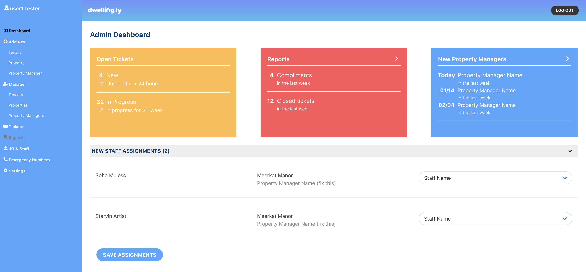Dwellingly is a volunteer civic-coding project that I am working on with Code for PDX. We are in the process of building an administrative dashboard that will be utilized across organizations in the Portland non-profit sector with supportive-housing programs. The goal of the project is to implement a solution in place of the current dated infrastructure to facilitate communication between recently-homeless tenants transitioned into supportive housing, the social workers they are assigned to, and the landlords of the properties they are placed in.
This project is a fullstack web application built with React, Bulma, and SASS for the web interface, and Python and SQLite for the database and back-end, with Jest for front-end testing. As a contributing developer, I have been responsible for building user-facing React components and integrating them into a code-base with over 40 volunteer contributors. My involvement in this project has helped me grow tremendously in my understanding of Git/Github and how they're used in industry best-practices. Aside from getting to learn and practicing new technologies, the project also meaningfully exposed me to what it's like to work in a real-world product team. I've also had the opportunity to contribute to onboarding and training new members, and have had many opportunities to mentor others on my own knowledge of web development and React.
Boomer-Ranger
github
 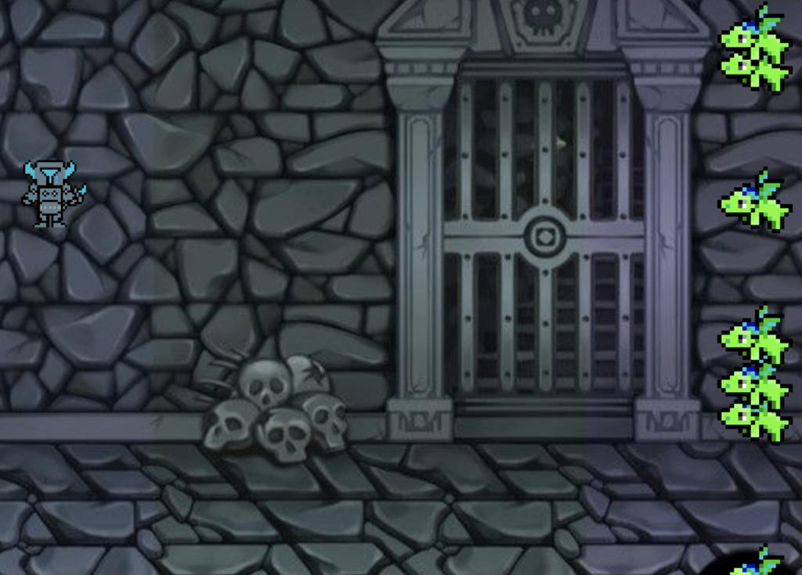
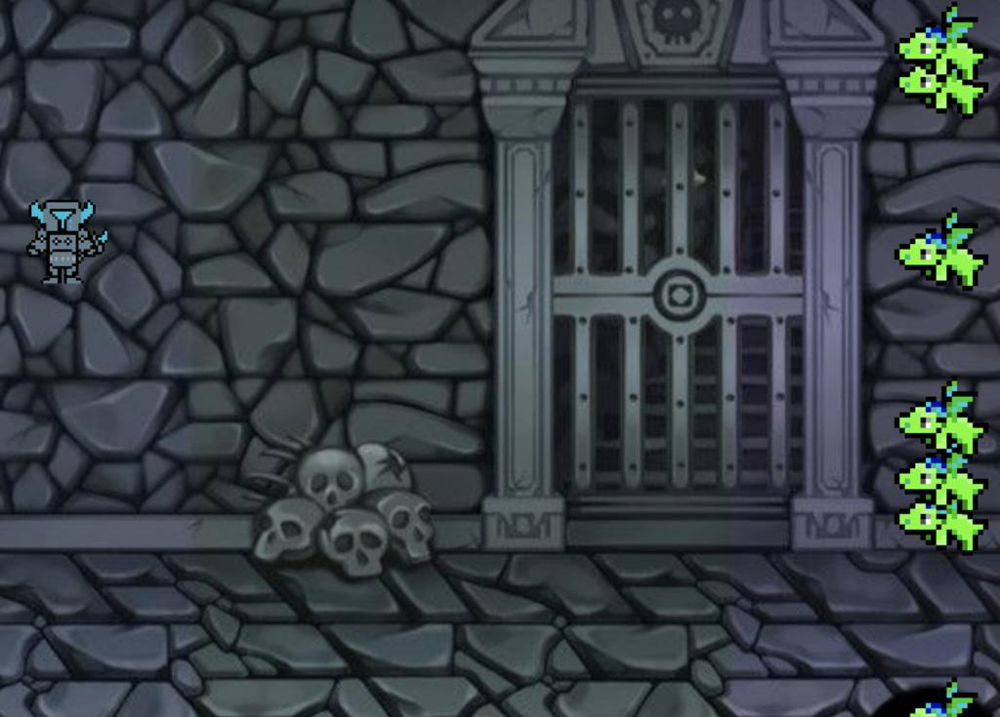
Winner of Mintbean's "GameHack - Dragons & Princesses" hackathon on August 12th, 2020! Boomer-Ranger is a game designed utilizing React alongside the Phaser.js library. The goal of the game is to have your knight defeat the dragons on the game map by throwing and catching a boomerrang in order to save the kidnapped princess. This was the third game that I created after tic-tac-toe and sudoku, and the first to feature character-based gameplay. Participating in the hack-a-thon was a great learning experience and taught me more about deployment and class programming.
Shop-EZ
github
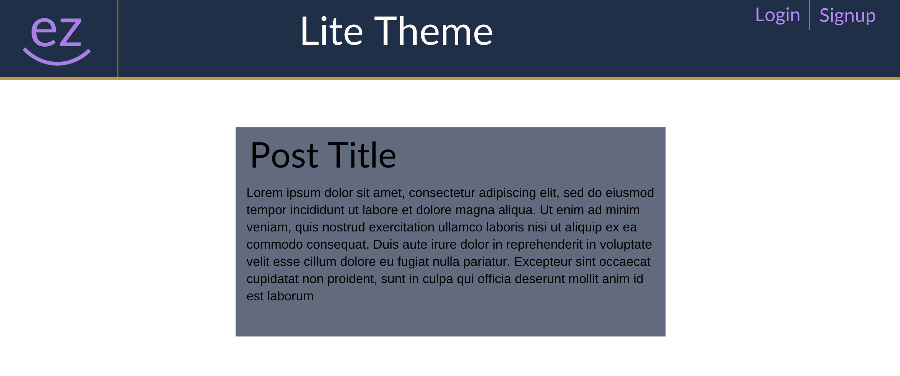
The Shop-EZ project is another collaboation with Tony Dyleuth, this time with the help of another talented developer, Caleb Henderson. This application is a model e-commerce website hosted in a shop-building platform. It features fluid design, responsive cart and sub-total, and account creation functionality. This porject utlizez PSQL and Node.js with Express to manage the back-end database and server, as well as React and Material-UI for the front-end interface, functionality, and dynamicism.
The Great Linkerator
github
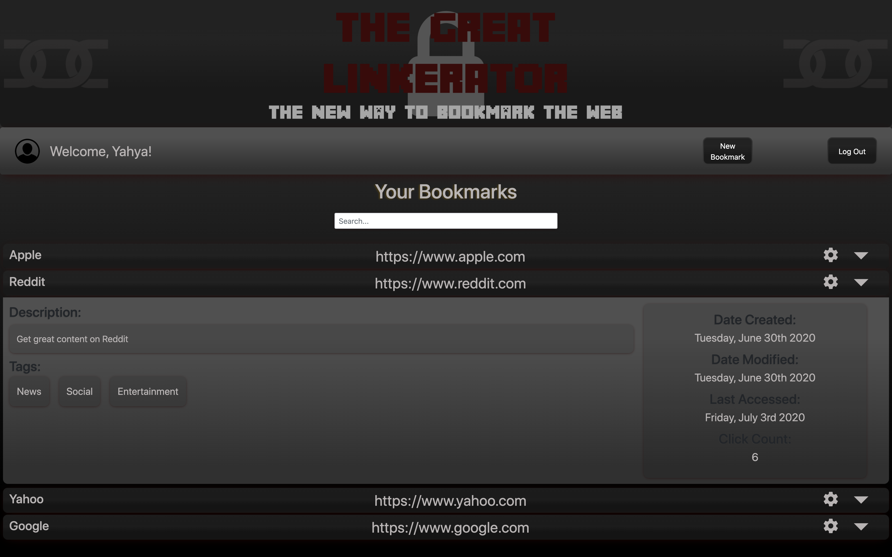
A collaborative initiative between myself and the talented Tony Dyleuth. The Great Linkerator is a fullstack application which serves as a bookmark manager with incremental filtering, user creation functionality, and a tagging system. Tony and I have been utilizing GitHub's distributed version controlling to collobaratively develop the project, while using Zoom and Slack to facilitate telecommunication and remote coding sessions. We both have our hands in both ends of the stack, but I have been tasked as the primary front-end developer for this project, for which I am once again building on my experience programming with React.
In this iteration of my React development, I have learned and implemented Webpack and Babel in place of Create React App and React Scripts, enabling hot re-loading during development. A significant departure from previous projects I've worked on is the usage of two front-end libraries: React Bootstrap and SASS (SCSS in particular). Utilizing React Bootstrap's vast library of professionally styled components has been an incredible and insightful learning experience and has created additional time for me to push the limits of the library by redesigning its default components with SASS. Since React Bootstrap uses .scss files in its styling library, it was a wonderful opportunity for me to explore the rabbit hole that is CSS pre-processing. While SCSS was the main necessity, I also used this chance to learn the original SASS syntax and how it differs from SCSS and further decided, while I'm at, I might as well pick up LESS as well since previous versions of Bootstrap used it in place of SASS. Working with these libraries has pushed my design and styling abilities to a new level. In addition to playing around with CSS and React libraries, I also learned to use Socket.IO for building realtime update and push functionality, allowing me to create live communication applications.
User Hub v. 2
github
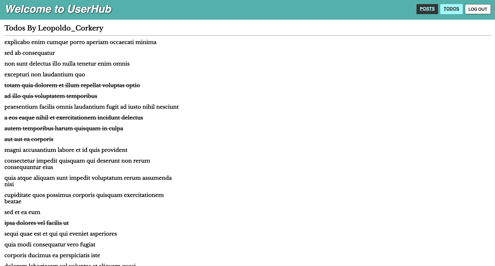
For my second attempt at creating a "User Hub" application, I designed an app which displays user posts and todos delineated by completion and due date. This time, rather than using jQuery and DOM manipulation to build the application, I utilized the React framework. I added onto my experience with React from my previous project by learning about and incorporating useEffect to enable asynchronous programming, conditional rendering of React templates and CSS styling, using React Router to handle front-end routing, and using React to interact with Web API's such as local storage to persist user sessions.
Deck Builder
github
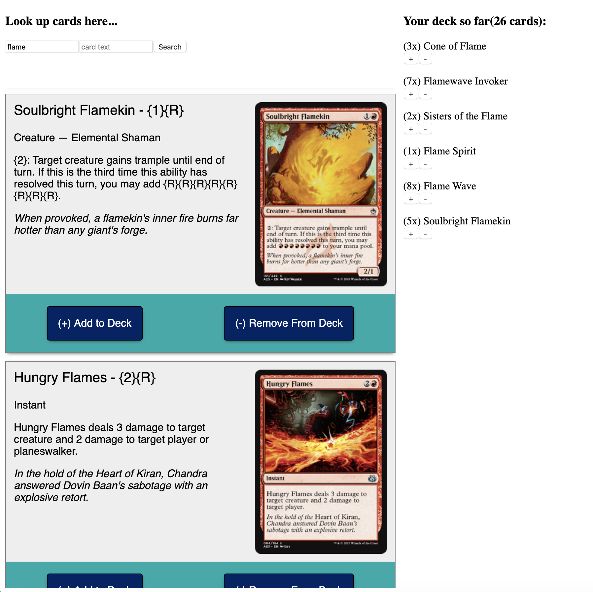
The "Deck Builder" project was my introduction to constructing a front-end with React. This application allows users to build and edit a Magic: The Gathering deck using the MTG API. For this project, I learned the fundamentals of programming with React which included learning about and using React elements, components, and props, taking advantage of the React framework to increase code modularity through separation of components, utilizing automatic re-rendering and stateful functionality using useState, avoiding mutation in updating state, using controlled components to create forms, using props to pass anything through children, and using React's built-in event-handling syntax, not to mention the foundational syntax of JSX.
Fitness Trackr
github
Building on the "Juicebox" back-end project, "Fitness Trackr" is another back-end REST API providing functionality for constructing a fitness application, including adding, updating, and deleting users, activities, and routines of activities. This involved once again utilizing PSQL to create a database with references, join tables, and seed data, building a web server client with end points, routing, sub-routing, and parameterized routes, adding encryption functionality and session functionality with jwt, and deploying to and configuring Heroku. However, for this project, I also learned about and utilized BCrypt to incorporate powerful end-to-end encryption. I also learned about creating my own hashing and salting functions and, once again, using .env files and dotenv to secure this type of sensitive data. I learned about "vertical" and "horizontal" approaches to building back-end applications, as well as Test-Driven Development (TDD) using Jest. On my own time, I also learned about using mock functions in Jest and integrating asynchronous functionality in testing.
Juice-Box
github
"Juicebox" is my first back-end only web application and is a REST API simplistically mimicing the functionality of Tumblr. It involved building a database with PostgresSQL (PSQL) complete with join tables, references, and seed data, building a client server to query the database with Axios CRUD requests, creating an API router and sub-routers to manage endpoint effectively, building parameterized sub-routes, building and sending encrypted JSON Web Tokens with jwt, securing jwt private keys and API keys with .env files accessed though the dotenv package, testing functionality from the CLI through advanced curl requests, and deploying servers to Heroku -- including setting up environmental variables and PSQL functionality in Heroku and transitioning a server from development to production.
It Takes A Village
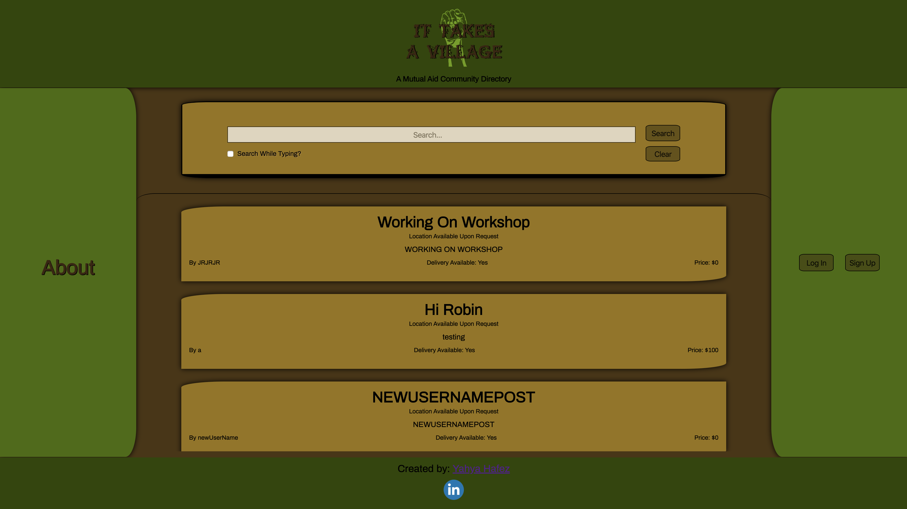For the "It Takes A Village" project, I was tasked with creating a web application with user registration and login functionality -- my first to do so thus far. Using the Stranger's Things API, I was also required to include an interface to display posts and send private message responses to them, the option to view ones messages (privately), to create, edit, and delete posts, and a search interface to filter through posts. I wanted this project to be useful and beneficial and, coming from a background in community empowerment, development, and engagement, I decided to make a directory for community resources. "It Takes A Village" was the result.
This project required learning about building full CRUD applications and making POST, PATCH/PUT, and DELETE API calls with fetch, which included the additional requirement of structuring headers and bodies for those requests, and understanding and utilizing JSON web tokens. I also learned more about render flow, managing keyboard events, and HTML status codes throughout the project. The process of creating the user registration and login interfaces taught me A LOT about front-end form validation through both cleverly manipulating HTML <input> tags and through layered logical validation in JavaScript's event handling. This was also an opportunity for me to learn about and play with a bit of regex. Returning to media queries in CSS, this becaame my most responsive web-application thus far, as it was my first experience implementing responsivity for changes in both horizontal and vertical browser size. I was also proud to build and implement my own keystroke handling algorithm which enabled the application search interface to filter posts as users type (incremental filtering)! Adding functionality to allow users to turn that feature off also added an exciting layer of complexity which I successfully worked through. This project was also another opportunity for me to flex my graphic design experience by building the website logo myself (with proper error handling this time!) 😅! Finally, I had some time to play around with some CSS frameworks including Bootstrap and Animate.css to add a bit of flair here-and-there, and eve made my own animation effects in CSS using @keyframes.
DevJobz
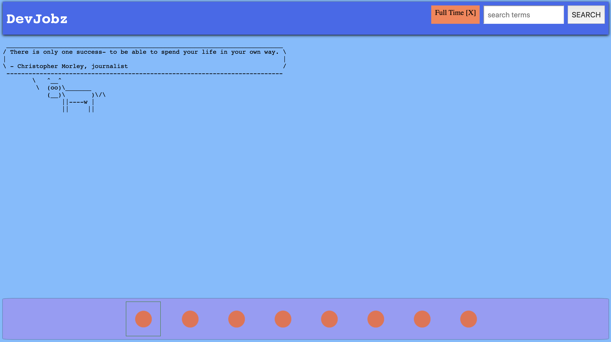The "DevJobz" project is my first foray into the world of back-end programming and creating REST API's. It's a web application which allows users to search for tech jobs using the GitHub Jobs API. The front page also uses the browser's Geolocation API to get location data (after asking for permission of course!) which is then used to display a weather forecast in the footer usng the Open Weather API.
Aside from even more practice with AJAX and GET requests, REST API's, event handlers, and state, I learned and used a lot of new concepts to create my first server on the back-end! I began learning how to use the Command Line Interface (CLI), which I went on to continue to learn more fully on my own. I also set up my machine to use Git and GitHub, and began pushing, pulling, cloning, forking, and all the other fun stuff that comes with that. I learned about npm and a bunch of new packages, perhaps most notably, express, axios, and dotenv. Speaking of dotenv, I learned about how to hide and later access sensitive information such as my API key, encryption keys, salts, and so on in a .env file in order to safely deploy my web applications and push to GitHub. Of course, I also learned about creating my own API end-points for different types of AJAX requests, and using them to send users data such as the jobs they're searching for, the weather in their location, and even a cow sharing an inspirational quote with them!
Newzy
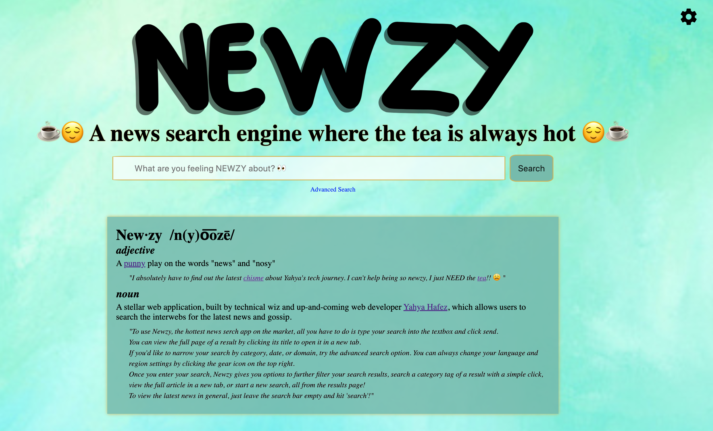The "Newzy" project is a search aggregator web application which allows users to do basic and advanced searches for news articles from across the web which are returned in reverse chronological order. Users can also see recent news not limited by search criteria by leaving the search bar empty and clicking search, specify the language and region which they would like to limit their search results to in the settings, and view related searches by clicking on the tags in a search result item.
This project involved more practice with AJAX and fetch calls, query strings, date formatting for API calls, API keys, and tokens, and utilitizing the Currents API. I especially enjoyed flexing my creativity in the styling for this project and coming up with a witty name and description to go with the concept 😌. In a small coincidence during an office hour session, one of my instructors downloaded my code files to run locally on his machine and, to my horror, the title logo, which I created myself as a transparent PNG image using my graphic design skills in order to add a more complex shadow and use a non-web friendly font (and to add some spice to my website using skills I picked up before learning web development 💁♀️), completely disappeared! This was because it used a relative path to point to the image source, and since the website was not yet deployed with all its resources, downloading the code files locally instead made it so the code pointed to a local source which was non-existent on my instructors device. The silver lining in that experience was that it taught me about using JavaScript event handlers to listen for errors in image rendering to then substitute the automatic "broken image" notice which appears when an image fails to properly load with plain text fancily styled in CSS ahead of time in case of emergencies just like this one! Including error handling for images to enable my applications to more gracefully deprecate became a regular practice of mine moving forward.
The Art Collector
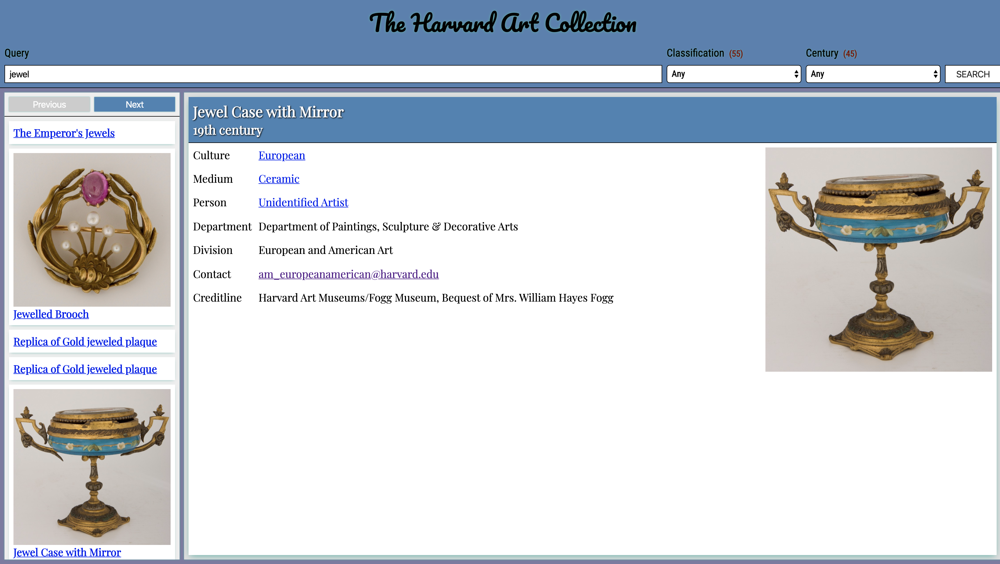For "The Art Collector" project, I built a search app that displays matching results from the Harvard Art Collection and an additional preview window displaying more information for selected results. The allows users to specify search keywords, as well as item classification and century. Using user inputs from any of these fields, I was able to practice creating query strings to make AJAX requests to the Harvard Art Museums API receiving catalouge information about each item in the art collection and an image link if available. I also employed pagination to redcue search load time.
Addditionally, leading up to this project, I learned more about AJAX and asynchronous programming, including more about error handling, using try...catch...finally... blocks, and using async/await. I also learned about cleaning up my code using object and array destructuring and nested objects and arrays, as well as retrieving and using API keys and tokens.
User Hub v.1
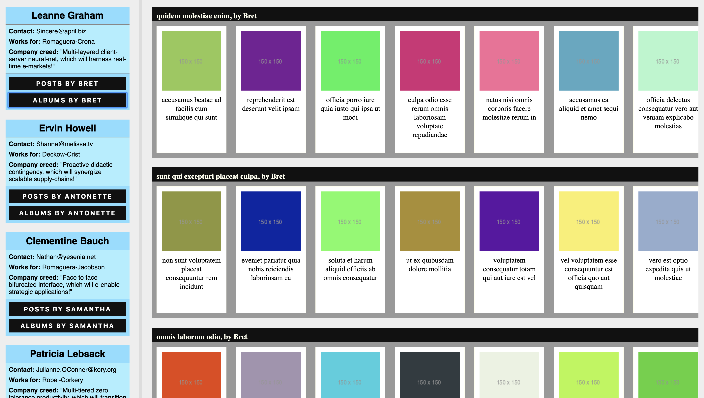
My first iteration creating a "User Hub" application represents my first deliberate effort as a programer to create a front-end client responsible for communicating with a back-end server and database. This User Hub application used fetch GET requests to populate a list of sample users, posts, albums, contact information, and company information, and provides an interface for posts with commenting functionality by users, as well as albums with descriptions. For this project, I learned about promises and their resolve and reject responses, and how to use them with then, catch, and finally. With that, I more broadly explored the concept of asynchronous programming, AJAX, and the importance of effective error handling. I also learned how to make GET requests using the browser's global fetch function to send data requests to servers and further practiced developing stateful applications. To use fetch effectively, I also learned about query strings and practiced constructing and compounding them by extracting user inputs from search fields and creating advanced search functionality.
The Arcade
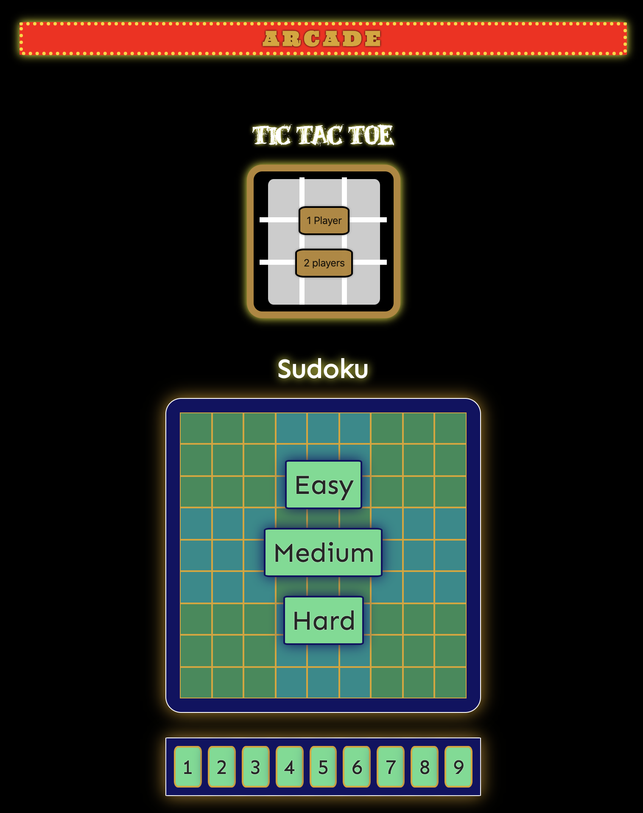
"The Arcade" project involved creating a front-end which would host multiple, stateful game applications of my choosing. I decided to use the opportunity to build a tic-tac-toe and a sudoku game. In preparing for this project, I learned a significant amount of new material, and reviewed previously learned material. This included type coercion, looping over strings, nested objects and arrays, functions as objects, function as object values, functions as parameters/higher order functions, passing by reference, using triple equals to test for deep equality with objects, the spread and rest operators, fuctions within functions, functions which return functions, counters, mapping with interpolated strings, and object destructuring. I also learned and practiced using typeof, for...in... and for...of... loops, Object.keys, Object.values, Object.entries, map, and reduce.
I was particularly proud of and suprised by my ability to create an artificially-intelligent computer opponent and 1 and 2 player modes in tic-tac-toe, creating three difficulty levels and functions to automatically produce grids in sudoku, and the styling work I did for the games.
To-Do This
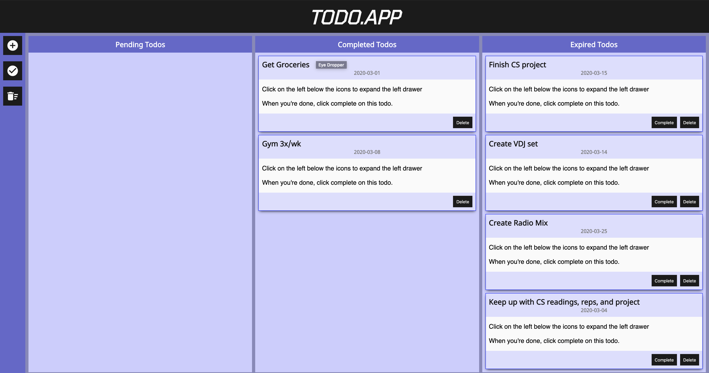
As its name implies, "ToDo This" is a simlpe, three-column to-do app, allowing users to create and delete todo items. The app automatically filters items as complete, pending, or expired, also allowing users to manually move complete items to incomplete, and expired and incomplete items to complete with click ans drop. For this project, I learned about and practiced using object literals, array methods (e.g. filter, forEach, indexOf, splice, shift, unshift, push, pop), key value pairs, accessing object and array items, and using the ternary operator to clean up simple if...else... statmenents.
I also learned about JSON objects, using local storage for caching, attaching and retrieving hidden information from DOM elements using .data(), using trigger to call native element methods, and creating and formatting date objects.
Calcul8r
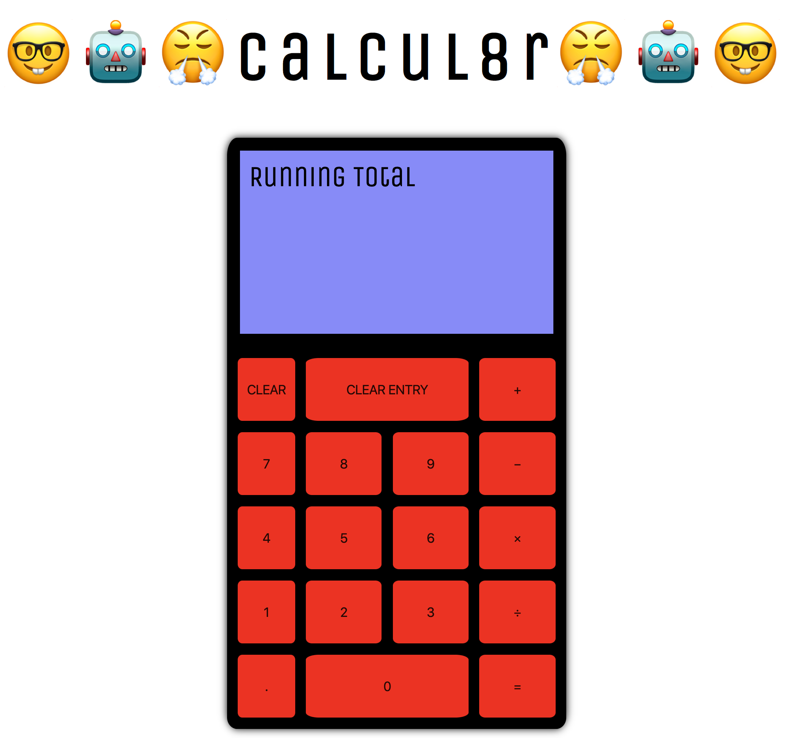
This project involved creating a web-application mimicing a simple calculator, which I endearingly named "Calcul8r". Working on this project helped to expand my understanding of building user interfaces and the concept of "state" and the "update mechanism". I also practiced meaningful commenting and documentation, giving functions explanatory names, code readability and coding with other programmers (and my future self) in mind, CSS grid, function scope, global scope, closures, higher order functions, using and manipulating the "return" keyword, type coercion, and logical operators (!!, &&, and !). I also learned about and practiced using template literals and string interpolation with jQuery.
This project marked a shift in my coding practice in becoming a more deliberate, consistent, and organized code-commenter throughout the coding process. Developing a regular habit and clean, informative style of writing accessible, easily-comprehendible, and well-organized code is now a point of pride for me and a practice I believe to be a significant strength.
Retro Draw
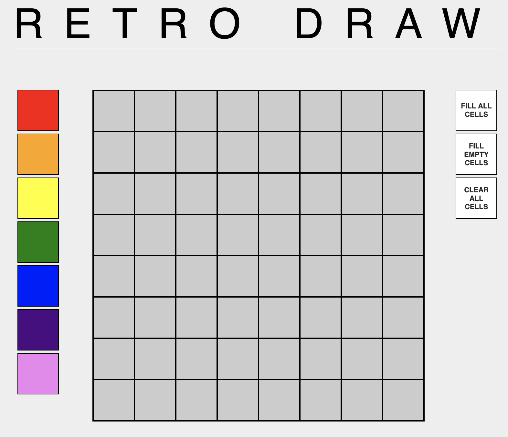"Retro Draw" is a web application allowing users to select a color from the left-hand color palette, and choosing from selecting a single cell they wish to fill with that color, filling all cells with that color, filling all empty cells with that color, or clearing all colors from the grid.
This project was my first deeper exposure to Javascript and jQuery. I became familiar with diffirent selectors and methods for interacting with DOM elements in jQuery and Vanilla Javascript, and modifying element attributes, classes, properties, styling, and content. I also began learning about and using variable types (let vs const vs var), primitive and complex data types, for and while loops, and if...else... statements, and functions. I also got to practice using event listeners and handlers, and became more familiar with this vs. $(this).
CopyCat DDT

This project involved stylistically mimicing the homepage of any website. I chose to challenge myself and mimic one of my favorite DJ'ing blogs, Digital DJ Tips (DDT). The project required heavy usage of media queries and pushed my abilities to make flexible, reactively-designed websites that dynamically transform to appropriately accomodate their windows. It alo involved practicing different image manipulation, styling, and captioning strategies and methods, more practice with fonts, color schemes, and positioning, as well as more practice with CSS flexbox and grid layouts. While the images and links were taken directly from the DDT website, the HTML and CSS were completely my own and, in reviewing the DDT HTML using Chrome Dev Tools afterwards, was structured significantly differently, all while achieving a similar effect.
I deployed a mobile-first approach for creating the copy of this website and was able to accomplish a lot for my level at the time, though with the one-week timeframe I had to work on it, the full desktop version still requires further optimization.
QWIRTY E-Commerce
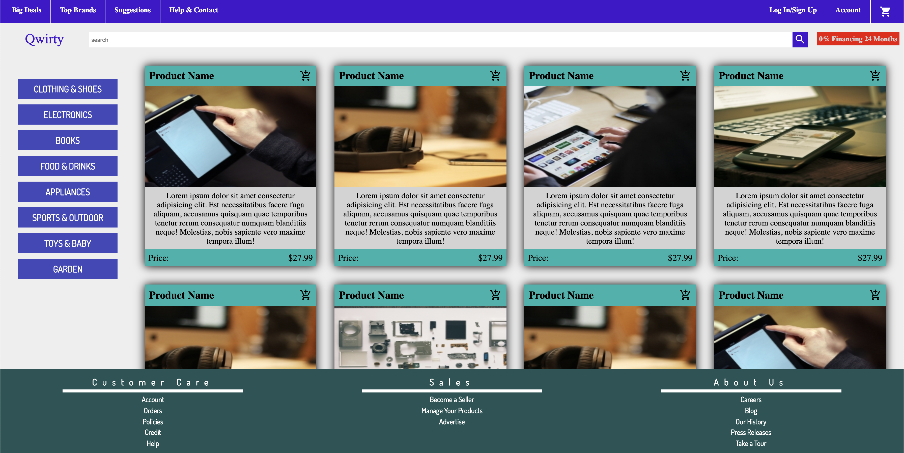
For this project, I created a mock e-commerce site called "Qwirty". This project involved practicing and implementing reactive and mobile-first web design using media queries, flexbox, and wraping. It also was an opportunity for me to deepen my experience with using CSS pseudo classes and with creating good-looking nav, header, and footer elements, as well as differentiating between and using static, sticky, absolute, and fixed positioning.
Personal Website
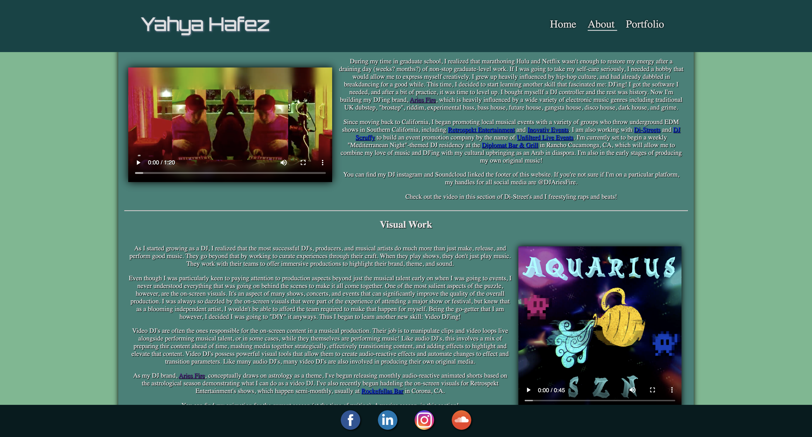
For my first programatic web development project, I made the website you're currently experiencing! I would later re-name it from "personal portfolio website" to "Yahya Codes", which I think is a lot more snazzy 😏. This involved adding content through HTML utilizing a variety of tags, creating hyperlinks, assigning "id" and "class" attributes, practicing accessbility with <alt> attributes for media content, adding custom text for hovering over links with <title> attributes, using character entity references for text that would otherwise be read as code, and more.
This project also required me to deploy a range of styling techniques through the use of CSS. Some of these techniques include basic components such as adjusting color, font, padding, and margins. I also utilized more nuanced stylings such as adding text and border shadows, importing non-native fonts, eliminating and re-styling typical hyperlink styles, deploying and manipulating floats, and making my website responsive to browser and device size changes using warping, flex-box, and context-reactive measurement units such as em, rem, vh, and vw, and more.
Aries Fire Artist Website
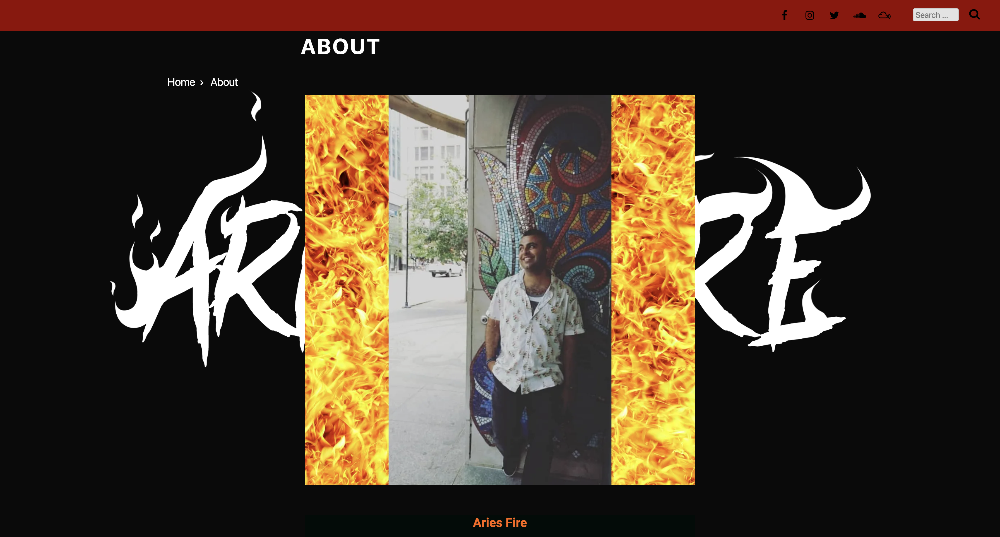A precursor to the official start of my journey as a web-developer, this was a website I whipped up on WordPress as an artist profile for my DJ'ing persona. While I've come a long way in technical skill and ability, I feel it's still valuable in demonstrating some of my design work and stylistic tendencies, as well as familiarity with building websites through website builders such as WordPress.